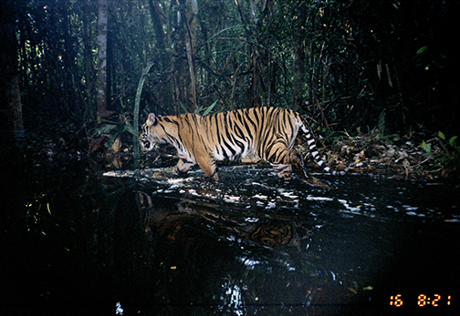
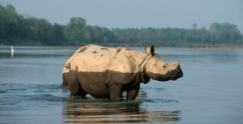
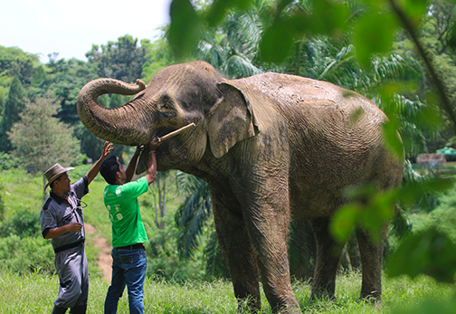

Pulau Sumatera
Sumatra, salah satu pulau terbesar di Indonesia, dikenal dengan keanekaragaman hayatinya yang luar biasa, termasuk berbagai spesies satwa langka yang hanya bisa ditemukan di kawasan ini.
Pulau ini memiliki ekosistem hutan hujan tropis yang menjadi rumah bagi berbagai spesies yang kini terancam punah akibat perusakan habitat, deforestasi, dan perburuan ilegal.
Dunia fauna Sumatra menghadapi ancaman yang serius, namun juga menyimpan potensi besar dalam upaya konservasi keanekaragaman hayati Indonesia.
Satwa-satwa langka di Sumatra mencerminkan kekayaan biodiversitas Indonesia, namun sekaligus menghadapi ancaman serius yang memerlukan perhatian mendesak.
Upaya konservasi melalui perlindungan habitat, pemulihan populasi, dan pendidikan masyarakat menjadi hal yang sangat penting untuk memastikan keberlanjutan kehidupan satwa-satwa ini.
Program rehabilitasi dan penangkaran juga tengah dilakukan oleh berbagai organisasi lingkungan untuk menjaga agar spesies-spesies ini tidak punah di alam liar. Sumatra menjadi salah satu wilayah kunci dalam menjaga keanekaragaman hayati Indonesia dan dunia.
Berikut merupakan penjelasan singkat nama hewan dan habitatnya di pulau Sumatra:
1. Harimau Sumatera

hewan ini yang mempunyai nama latin Panthera Tigris Sumatrae ini menjadi spesies hewan asli dari Pulau Sumatera dan masih bertahan hidup hingga saat ini.
Ciri utama dari harimau sumatera adalah ukuran tubuhnya yang mana lebih kecil dibandingkan jenis harimau pada umumnya, serta memiliki corak loreng hitam gelap.
Berhubung jenis harimau ini adalah hewan endemik, maka harimau sumatera hanya di hidup Pulau Sumatera saja, yang biasanya berhabitat di hutan dataran rendah dan hutan pegunungan.
Hingga saat ini, jumlah populasinya hanya tinggal sekitar 400 ekor saja. Untuk menghindari kepunahan akibat perburuan liar, maka kebanyakan harimau sumatera di ditempatkan di Cagar Alam dan Taman Nasional.
Kemudian, sekitar 250 ekor hidup di berbagai kebun binatang yang tersebar di seluruh dunia.
2. Badak Sumatera

badak adalah satwa yang terancam punah, 5 spesies badak yang ada di dunia, 2 diantaranya hidup di Indonesia, yakni Badak Sumatera dan Badak Jawa.
Badak Sumatera dengan nama latin Dicerorhinus Sumatrensis menjadi satu-satunya badak Asia yang memiliki dua cula. Sayangnya, saat ini keberadaannya menjadi punah akibat perburuan liar untuk diambil culanya.
Cula badak sumatera ini dipercaya dapat menjadi obat tradisional untuk menyembuhkan berbagai penyakit, meskipun sebenarnya tidak ada penelitian ilmiah yang terkait akan kepercayaan tersebut. Ditambah lagi,
susunan dalam cula badak itu serupa dengan kuku dan rambut manusia, sehingga jelas tidak memiliki khasiat penyembuhan apapun.
Populasinya saat ini hanya kurang dari 80 ekor saja dan rata-rata tersebar di wilayah Taman Nasional Bukit Barisan, Taman Nasional Gunung Leuser, dan Taman Nasional Way Kambas.
Habitat badak sumatera kebanyakan adalah di daerah berbukit yang dekat air, hutan hujan tropis, hutan lumut pegunungan, hingga daerah pinggiran hutan.
3. Gajah Sumatera

Gajah Sumatra dengan nama latin Elephas Maximus Sumatranus ini memiliki ukuran yang lebih kecil daripada gajah afrika.
Kebanyakan gajah sumatera ditangkarkan di Way Kambas Lampung, tetapi ada juga yang dikembangbiakkan di Tangkahan, Langkat.
Menurut survey pada tahun 2007, jumlah populasi dari gajah sumatera yang tersisa adalah sekitar 2.400-2.800 ekor,
tetapi jumlahnya semakin menurun akibat perburuan liar yang marak terjadi akhir-akhir ini.